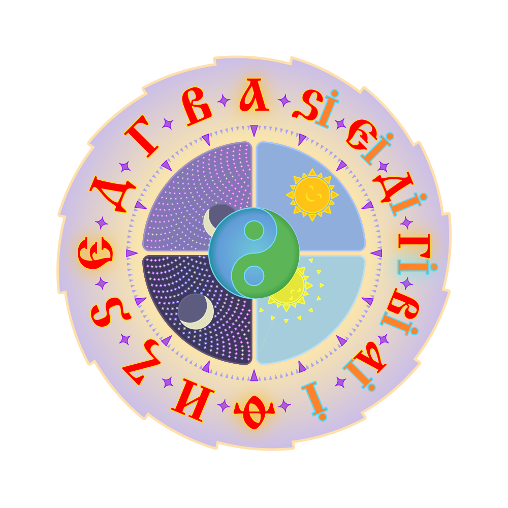

<div class="iclock-section">
  <div class="iclock">
    
    <div class="iclock-disc-container" id="hourDiscContainer">
      
    </div>
  </div>
</div>

<script>
(function () {
  if (window._clockInterval) {
    clearInterval(window._clockInterval);
  }

  const hourDiscContainer = document.getElementById('hourDiscContainer');
  if (!hourDiscContainer) return;

  function updateClock() {
    const hours = new Date().getHours();
    const hourDegree = ((hours % 16) / 16) * 360;
    hourDiscContainer.style.transform = 'rotate(' + hourDegree + 'deg)';
  }

  window._clockInterval = setInterval(updateClock, 100);
  updateClock();
})();
</script>
